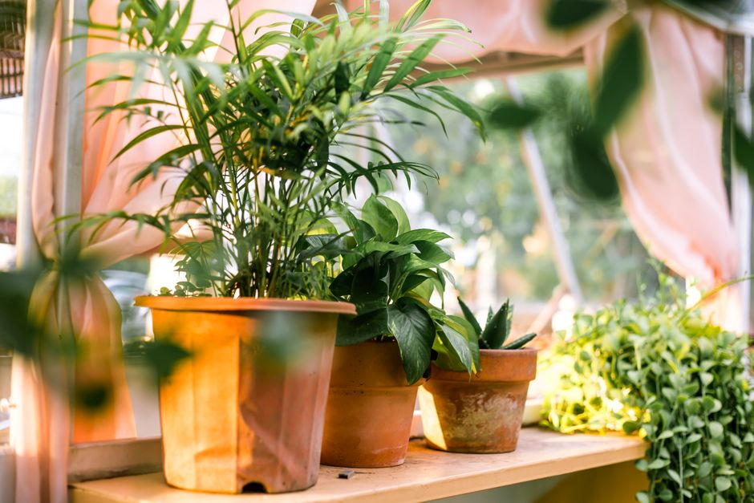

Comment maintenir l'humidité naturelle pour vos plantes d'intérieur en hiver

Photo: Vietnam Tri Duong Photographer / Pexels
En hiver, le chauffage assèche l'air. Certaines plantes tolèrent très bien cet air sec, d'autres, comme la calathea ou la fougère de Boston, ont les pointes des feuilles qui brunissent. Voici quelques moyens simples d'améliorer la situation sans rien abîmer.
Mesurez avant d'agir
Un petit hygromètre, peu coûteux, indique l'humidité de la pièce. Dans une maison chauffée, elle est souvent sous les 30 %. Pour les plantes qui l'apprécient, on vise plutôt 40 à 60 %. Pour la plupart des plantes courantes, une humidité normale suffit.
Grouper les plantes
Les plantes libèrent de la vapeur d'eau par leurs feuilles. Regroupées, elles créent autour d'elles un air un peu plus humide. Laissez quand même de la circulation d'air entre elles pour éviter les moisissures.
Utiliser un humidificateur
C'est le moyen le plus efficace. Placez-le à un ou deux mètres des plantes, nettoyez-le régulièrement selon la notice et utilisez l'eau recommandée par le fabricant. Évitez de diriger la vapeur directement sur les murs et les meubles.
Le plateau de galets
Posez le pot sur des galets dans une soucoupe contenant de l'eau, sans que le fond du pot trempe dans l'eau. L'effet est modeste et local, mais le plateau aide aussi à protéger le plancher.
Ce qui aide peu
La brumisation des feuilles n'augmente l'humidité que quelques minutes et peut favoriser les taches de champignons sur certaines plantes. Les bouteilles d'eau posées près des plantes ont un effet négligeable.
Éloigner les sources de chaleur
Gardez les plantes à distance des radiateurs, des bouches de chaleur et des courants d'air froid près des fenêtres. Les variations brusques de température abîment les feuilles plus que l'air sec.
Arrosez moins en hiver
La croissance ralentit en hiver : le terreau sèche moins vite. Attendez que le dessus soit sec avant d'arroser de nouveau, et videz la soucoupe après l'arrosage.
Si vous avez un chat ou un chien, souvenez-vous que le pothos, le philodendron et le spathiphyllum sont toxiques s'ils sont mâchés. Placez-les hors de portée.
Produits recommandés
En tant que Partenaire Amazon, je réalise un bénéfice sur les achats remplissant les conditions requises.